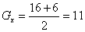
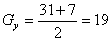

As in plane geometry, a trapezoid is a quadrilateral with one pair of parallel sides. (See Trapezoid definition). In coordinate geometry, each of the four vertices (corners) also have known coordinates.
In the figure above, click on 'reset' then 'show altitude'. The altitude is the perpendicular distance between the two bases (parallel sides). To find this distance, we can use the methods described in Distance from a point to a line. For the point, we use any vertex, and for the line we use the opposite base. In the figure above we have used the distance from point B to the opposite base AD.
This method will work even if the trapezoid is rotated on the plane, but if the sides of the trapezoid are parallel to the x and y axes, then the calculations can be a little easier. The altitude is then the difference in y-coordinates of any point on each base, for example A and B.
In the figure above, click on 'show median'. Recall from Median of a Trapezoid that the median is a line segment linking the midpoints of the two legs of the trapezoid. (The legs are the two non-parallel sides.) We can find the midpoint of a leg by using the method described in Midpoint of a line segment. By applying this twice, once for each leg, the median can be drawn between them.
The length of the median can be found in two ways:

and the y coordinate is the average of the y-coordinates of A and B:
and so, one end of the median is at G(11,19). By the same method, the other end is at H(42,19). Click 'show median' to verify.In the interest of clarity in the applet above, the coordinates are rounded off to integers and the lengths rounded to one decimal place. This can cause calculatioons to be slightly off.
For more see Teaching Notes